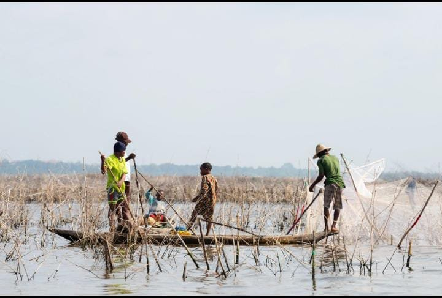

Recherche
Télédétection, SIG, dynamique de l'occupation du sol, vulnérabilité environnementale.
Une plateforme scientifique et cartographique dédiée à la recherche, à la connaissance et à la valorisation des écosystèmes humides du Bénin.
Positions indicatives, en attente de validation des limites officielles.



Titres abrégés. Liens et références complètes à ajouter.

L'OZHB est une initiative scientifique et cartographique qui vise à faire connaître et préserver les écosystèmes humides du Bénin, par la géomatique, la télédétection et la recherche environnementale.
HONFO Elfried Elisée
Porteur du projet. Spécialiste en géo-information, SIG, cartographie et télédétection. Licence en Géomatique (Centre universitaire d'Adjarra), Master 2 en cours à l'Institut UNESCO GAGIEE. Lire la biographie
Superficies, coordonnées et départements : fiches officielles Ramsar (RSIS). Dates de désignation, espèces et statuts UICN : en cours de vérification.
Menaces tirées de sources citées pour chaque site. Elles restent à valider par le porteur du projet avant publication définitive.
Photographies du porteur du projet. Les lieux exacts (localité, commune) sont à confirmer avant publication.
Né le 14 juin 1992 à Abomey-Calavi, au Bénin, Elfried Elisée HONFO est un jeune professionnel béninois dont le parcours se construit autour de la géographie, de la géomatique, de la connaissance des territoires et de la protection de l'environnement.
Son parcours scolaire est marqué par une expérience entre le sud et le nord du Bénin. Il effectue une partie de ses études primaires à Sèmè-Kpodji, avant de poursuivre et d'achever son cycle primaire dans le département de la Donga, plus précisément dans la commune de Copargo, où il obtient son Certificat d'études primaires (CEP).
Il poursuit ensuite ses études secondaires à Djougou, où il obtient le Brevet d'études du premier cycle (BEPC) au CEG 1 de Djougou. Il achève son parcours secondaire à Abomey-Calavi, au sein de l'établissement Clé de la Réussite, où il obtient son baccalauréat.
Son orientation vers la géographie et les sciences de l'environnement s'inscrit progressivement dans une réflexion personnelle sur les relations entre les sociétés humaines et leur milieu naturel. Pour lui, la protection de l'environnement ne se limite pas à la préservation des ressources naturelles : elle consiste aussi à rétablir et à renforcer le lien fondamental qui unit les êtres humains à la nature. Cette conviction devient progressivement une motivation profonde et un véritable défi personnel : contribuer à construire une relation plus harmonieuse entre les communautés et les écosystèmes dont elles dépendent.
Animé par cette ambition, il poursuit des études universitaires en géographie, avec une spécialisation en géomatique. Il approfondit ensuite ses connaissances à travers un Master en géo-information et ses applications à la gestion intégrée des eaux et des écosystèmes, à l'Université d'Abomey-Calavi, au sein du CIPMA – Chaire UNESCO.
Cette formation lui permet de développer des compétences en systèmes d'information géographique (SIG), cartographie, télédétection, analyse spatiale et gestion des ressources naturelles. Il s'intéresse particulièrement à l'utilisation des technologies géospatiales pour comprendre les transformations des territoires, suivre l'évolution des écosystèmes et contribuer à une meilleure prise de décision environnementale.
Au fil de ses expériences professionnelles et scientifiques, il s'investit dans des activités liées aux études environnementales, à la collecte et au traitement de données géographiques, aux inventaires ornithologiques et à la conservation de la biodiversité. Ses expériences dans les milieux humides de Ouidah et de la basse vallée de l'Ouémé renforcent notamment son intérêt pour les mangroves, les oiseaux et la protection des écosystèmes aquatiques. Il nourrit également un intérêt particulier pour la conservation des zones humides, dont le rôle écologique, économique et social est essentiel.
Son parcours scientifique est marqué par des contributions à des travaux portant sur la conservation de la biodiversité et les dynamiques territoriales.
Il est notamment co-auteur de l'article scientifique intitulé « Conservation implications of the illegal trade in Hooded Vultures Necrosyrtes monachus for belief-based use in Benin, West Africa », publié en 2025 dans la revue internationale Bird Conservation International. Cette recherche porte sur les enjeux de conservation du vautour charognard au Bénin face à son commerce illégal destiné à des usages fondés sur les croyances.
Il est également co-auteur de l'étude intitulée « Analyse spatiale de l'accaparement des terres agricoles et ses impacts socio-économiques dans la commune de Kpomassè (Sud-Bénin) », publiée en 2025 dans la revue GEOVISION. Ce travail aborde les transformations de l'occupation des terres agricoles et leurs conséquences socio-économiques.
Dans la continuité de ses travaux sur la connaissance et la préservation des écosystèmes, il est invité à présenter une communication scientifique à la deuxième édition du Colloque scientifique international sur l'économie bleue en Afrique, qui se tiendra à l'Université de Lomé, au Togo, du 2 au 4 décembre 2026.
Sa communication est intitulée : « Cartographie par télédétection des niveaux de dégradation des zones humides du site Ramsar 1018 (Bénin) ».
Cette contribution s'inscrit dans le thème général du colloque : « Économie bleue et savoirs locaux : valorisation des ressources marines et côtières pour un développement durable ». Elle traduit son intérêt pour la mobilisation des outils de télédétection et de cartographie dans l'étude de l'état des zones humides et la production de connaissances utiles à leur conservation.
Au-delà de son parcours académique et professionnel, Elfried Elisée HONFO nourrit une ambition : contribuer à rétablir le lien entre les êtres humains et la nature, en faisant de la connaissance, de la sensibilisation et de la science des leviers de transformation.
Il souhaite particulièrement participer à une meilleure connaissance des zones humides du Bénin, à la protection de la biodiversité et à la valorisation des écosystèmes aquatiques et côtiers.
Dans cette perspective, il porte le projet de création de l'Observatoire des Zones Humides du Bénin, une initiative envisagée comme un espace de documentation, de sensibilisation et de diffusion des connaissances sur les zones humides, avec une attention particulière à la basse vallée de l'Ouémé.
À travers son engagement, il défend une conviction : protéger la nature, c'est aussi préserver les conditions de vie des générations présentes et futures. Son ambition est de mettre les outils scientifiques et géospatiaux, les connaissances locales et son engagement personnel au service d'une gestion durable des ressources naturelles au Bénin et en Afrique.
Contact : zonehumide99@gmail.com
Télédétection, SIG, dynamique de l'occupation du sol, vulnérabilité environnementale.
Faune, flore et habitats, avec noms scientifiques et statuts UICN référencés.
Restauration, sensibilisation, protection des berges et gestion durable.